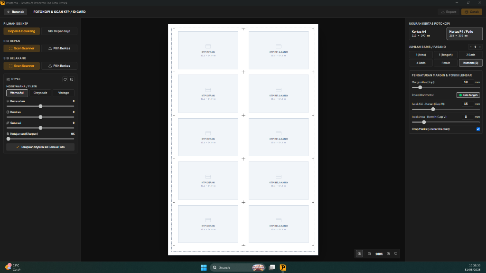
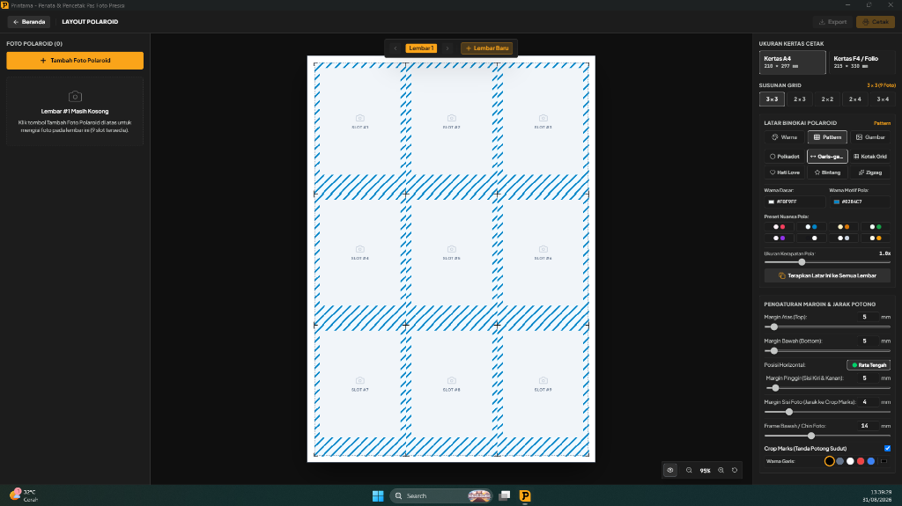

Dokumentasi Resmi Printama
Panduan terstruktur untuk membantu Anda mengoperasikan seluruh modul percetakan Printama dengan efisiensi maksimal, kualitas cetak 300 DPI, dan hemat kertas.
1. Persyaratan Sistem & Panduan Instalasi
Printama adalah aplikasi desktop native Windows yang 100% bebas dari ketergantungan internet/cloud. Kami menyediakan 2 edisi resmi untuk menjamin kompatibilitas menyeluruh pada semua komputer studio dan percetakan:
Windows 10 & Windows 11 (64-bit)
- Menggunakan engine Chromium & Node.js generasi terbaru.
- Tersedia paket Installer (.exe) dan Portable (.exe).
- Otomatis mendeteksi update terbaru langsung dari GitHub.
Windows 7 (SP1) & Windows 8 (64-bit)
- Khusus komputer percetakan lama tanpa perlu install kernel patch.
- Bebas error
KERNEL32.dll / SHELL32.dll. - Seluruh fitur (Pas Foto, FC KTP, Polaroid, 300 DPI) 100% lengkap.
Petunjuk Pemasangan:
- Buka halaman Pusat Unduhan dan pilih installer sesuai versi Windows Anda.
- Jalankan berkas
.exeyang diunduh. Jika muncul peringatan Windows SmartScreen, klik "More Info" lalu "Run anyway". - Aplikasi langsung terbuka dan siap digunakan tanpa perlu koneksi internet.
2. Modul Layout Pas Foto & Preset Cepat
Modul ini memungkinkan Anda menata kombinasi foto ukuran 2×3, 3×4, 4×6, dan 2R secara instan dengan algoritma kalkulasi hemat kertas.

Preset Paket Siap Cetak:
- Standar: 4 lembar 2×3, 3 lembar 3×4, 5 lembar 4×6 (Total 12 foto).
- Lengkap: 8 lembar 2×3, 6 lembar 3×4, 5 lembar 4×6 (Total 19 foto).
- Lamaran Kerja: 6 lembar 3×4, 5 lembar 4×6 (Total 11 foto).
- Full Lembar: 8 lembar 2×3, 12 lembar 3×4, 15 lembar 4×6 (Total 35 foto).
3. Modul Fotokopi & Scan KTP / ID Card 1:1
Fotokopi KTP dan kartu identitas fisik dengan presisi rasio 1:1 (85.6 × 54 mm).

- Scan Hardware WIA: Klik tombol Scan Scanner untuk mengambil gambar langsung dari perangkat scanner Anda.
- Pilihan Tata Letak: 1 pasang atas, 1 pasang tengah, 2 baris (2 pasang), 4 baris (4 pasang), atau lembar penuh.
- Garis Batas Potong: Membantu pemotongan fisik kartu agar rapi dan simetris.
4. Modul Polaroid Studio & Auto-Pagination
Cetak foto polaroid aesthetic default 9 foto/lembar di kertas A4 & F4.

5. Daftar Shortcut Keyboard
| Kombinasi Tombol | Fungsi / Aksi |
|---|---|
| Ctrl + P | Membuka dialog cetak langsung ke printer |
| Ctrl + E | Membuka modal ekspor dokumen (PDF / PNG / JPEG 300 DPI) |
| Mouse Wheel | Zoom in / Zoom out kanvas kerja preview |
| Klik Ganda Slider | Reset nilai kecerahan, kontras, atau saturasi ke 0 |